Home

Equipe 
ODS 11

ODS 12

Logout
11.a Apoiar relações econômicas, sociais e ambientais positivas entre áreas urbanas, periurbanas e rurais, reforçando o planejamento nacional e regional de desenvolvimento
O ponto acima é observado na rua em que moro no Bela Vista - Palhoça, onde uma das áreas de preservação ambiental espalhadas pelo bairro é integrada junto ao espaço urbano. Essa integração é ampliada pelos moradores através da manutenção de uma pequena horta, a conservação de um pequeno espelho d'água, a implantação de comedouros para pássaros e o plantio de mudas de plantas e árvores nos canteiros que delimitam a rua. Proporcionando não só um bairro mais bonito, como mais verde e agradável para toda comunidade.
11.b Até 2020, aumentar substancialmente o número de cidades e assentamentos humanos adotando e implementando políticas e planos integrados para a inclusão, a eficiência dos recursos, mitigação e adaptação às mudanças climáticas, a resiliência a desastres; e desenvolver e implementar, de acordo com o Marco de Sendai para a Redução do Risco de Desastres 2015-2030, o gerenciamento holístico do risco de desastres em todos os níveis.
Sobre a prática de políticas integradas a eficiência de recursos, temos um exemplo interessante que ocorre no bairro Chico Mendes, localizado na região da grande Florianópolis. Como resposta a um problema de gestão de resíduos orgânicos que causou doença e óbito, uma comunidade com vulnerabilidade social se reuniu e criou "A revolução dos baldinhos". O foco do projeto se tornou o tratamento de resíduos orgânicos, através da coleta e compostagem. Voluntários visitam as famílias cadastradas no programa, recolhem o lixo orgânico separado no baldinho e substituem por um vazio, e transformam os resíduos em adubo orgânico, utilizado na horta comunitária. Parte do que é cultivado é vendido para manter o projeto, e a outra parte é distribuída para a comunidade. Além disso, o projeto também recolhe óleo de cozinha já utilizados e os transformam em sabão. É uma ação relativamente fácil de ser aplicada em outras situações e seria interessante que os bairros tivessem um centro de coleta para que a comunidade pudesse levar o material orgânico. Para além do meio ambiente, cria-se um senso de comunidade com os envolvidos do projeto, além do benefício da horta comunitária.